Sources. Google, new is the November 2026 model under review. Google, current is the model Google published in 2024. GloFAS v4 and GloFAS v5 are two versions of the Copernicus Global Flood Awareness System. Each has a reanalysis: the model run over past years with the weather on record, 1999 to 2023 here (the new model's also covers 2024 and 2025, used only where stated). Three have an archive of the forecasts they would have issued: Google, new 2016 to 2025, Google, current 2016 to June 2023, GloFAS v4 2003 to 2023. Forecasts are compared on 2016 to 2023.
Benchmark. The river gauges of SWALIM (Somalia Water and Land Information Management) at the same seven stations. A gauge measures water height and a model gives flow, so each is read against its own levels. The 1-in-3 level of a gauge or a model is the value its season peak reaches in about one season in three; the 1-in-5 level, one in five. A flood season at a station is a season in which the gauge is at or over its 1-in-3 level (or the 1-in-5 where stated). A river flood is a season in which two gauges on the river are at or over their own level, at any time in the season. Gauge levels are set on 2000 to 2023, model levels on 1999 to 2023; seasons are scored from 1999 where the gauges have a record. The seasons are Deyr, October to December, and Gu, March to May.
Threshold reached. At a station: the model's flow is at or over the model's own level. On a river, which is the trigger rule: three of the four Juba stations, or two of the three Shabelle stations, are at or over their level on the same day. Forecasts are read against the level fitted on the same model's reanalysis.
1What the records show
The trigger rule on the new model, one square per season: its reanalysis, and from 2016 its forecasts (the first forecast of the season that meets the rule, forecast days 1 to 7). First at the 1-in-3 level, then at the 1-in-5. Section 3 has the same for every source.

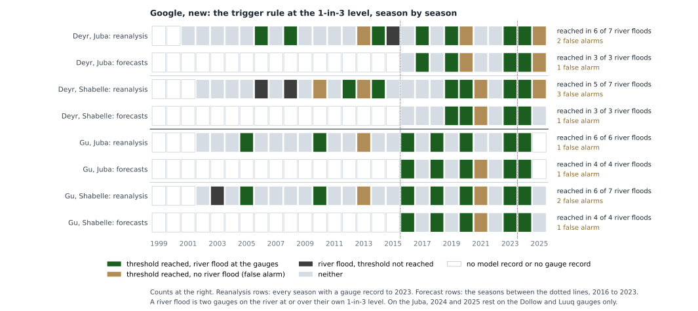

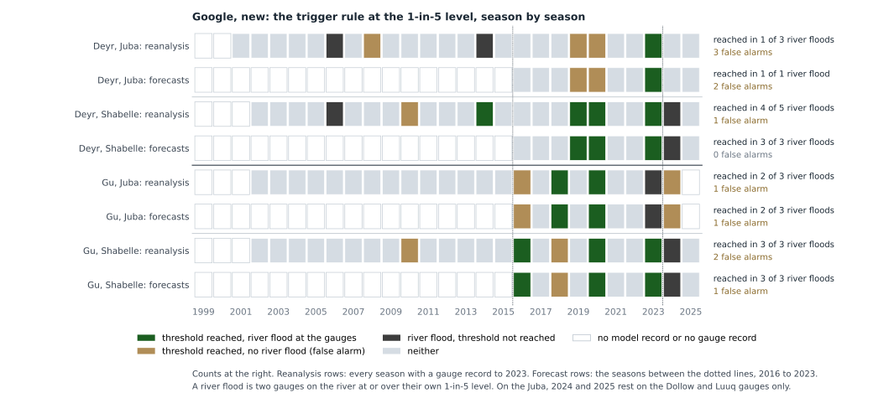
- Forecasts. At the 1-in-3 level, 2016 to 2023, the new model's forecasts and its reanalysis agree on threshold reached or not reached in 31 of the 32 combinations of river, season and year (the exception: the Juba in Gu 2021, reached on the forecasts only). On forecast day 7, six days after the day of issue, on the days of the largest rises in its own reanalysis, the forecast already showed 95 to 104% of the rise (middle value over the stations of each river and season; single stations 79 to 105%). Google, current: 90 to 125% (single stations 90 to 126%). GloFAS v4: -11 to 60% (single stations -38 to 70%); below 0 the forecast showed a fall. Whether the new model's archived forecasts were computed from the weather forecasts available at the time is not confirmed (section 4).
- Days between the threshold being reached and the second gauge reaching its 1-in-3 level (middle value over the river floods with the threshold reached, 2016 to 2023). Juba Deyr: forecasts 5 before, reanalysis 1 after. Shabelle Deyr: forecasts 4 before, reanalysis same day. Juba Gu: forecasts 3 after, reanalysis 10 after. Shabelle Gu: forecasts 13 before, reanalysis 7 before.
- After 2023, new model only, 1-in-3 level. Gu 2024: threshold reached on both rivers, on the reanalysis and on the forecasts. Juba: river flood; Shabelle: river flood. Deyr 2024: threshold reached on both rivers, on the reanalysis and on the forecasts. Juba: river flood; Shabelle: river flood. Gu 2025: threshold not reached. Juba: no gauge record; Shabelle: no river flood. Deyr 2025: reanalysis, threshold reached on both rivers; forecasts, threshold reached on the Juba. Juba: no river flood; Shabelle: no river flood. On the Juba these two years rest on the Dollow and Luuq gauges only.
- Single stations, 1-in-3 level, new model, the seven stations added up. Deyr: threshold reached in 33 of 51 flood seasons, with 18 false alarms. With each level fitted without the season scored: 30 of 45, with 22. Gu: threshold reached in 37 of 44 flood seasons, with 14 false alarms. With each level fitted without the season scored: 41 of 47, with 13. The gauge levels are refitted too, so the number of flood seasons changes.
- Jowhar. At the 1-in-3 level every source reaches its threshold in fewer than half of the flood seasons there, in Deyr and in Gu (POD 0.27 to 0.45). The Jowhar gauge sat at one top reading for five days or more in 9 of its 24 Deyr seasons.
- Day-to-day agreement with the gauges (rank correlation: 0 is no relation, 1 is the same order of days). The new model has the highest value of the four sources at 13 of the 14 combinations of station and season (0.79 to 0.90), and at 13 with the seasonal cycle removed (0.57 to 0.83). When the value is recomputed on random picks of the seasons (section 12), the new model's value stays above the other source's in at least 95% of the picks at 10 of 14 against Google, current, 12 against GloFAS v4 and 10 against GloFAS v5.
- Which seasons are the large ones, 1-in-3 level. AUC is the chance that a flood season has a higher model peak than a season without a flood. The new model has the highest, or equal highest, AUC at 8 of 14 combinations of station and season, and the highest, or equal highest, rank correlation of season peaks at 8 (counted before rounding: at Belet Weyne in Gu it shows the same two decimals as the highest and is not counted). It has the lowest AUC of the four at Dollow in Deyr (0.69; the others 0.88 to 1.00) and at Jowhar in Gu (0.60; the others 0.61 to 0.67).
- Size of the flows against SWALIM's discharge series, whole year. At Luuq, Belet Weyne and Bulo Burti, on a typical day the new model runs at 1.5 to 2.0 times SWALIM's flow (GloFAS v5 0.8 to 1.0, GloFAS v4 3.9 to 5.5, Google, current 0.5 to 1.3). At the yearly peaks it runs at 0.7 to 1.5 times.
2The largest floods, day by day
The seasons that rank among the gauges' five largest on either river, one panel per station. Every line is drawn as a share of its own 1-in-3 level, so 100% is the flood level for the gauge and for the model alike. The heights of the curves differ; what can be compared is when each rises and whether each reaches its 100% line. From 2016 the first view also draws the new model's forecast for forecast day 7. The other three sources end in 2023, so the 2024 seasons show the new model only. Where a gauge line runs flat at its top, the gauge gave the same reading on those days (section 10). A line that stops before the end of the season is the end of that record. The vertical scale changes from one season to the next.
Season
Lines


3The trigger rule by river
The trigger rule against the river floods, as defined at the top of the page. The first charts show every season, with a reanalysis row for each source and a forecast row for the three that have a forecast archive. For the forecast rows the rule is checked on each day's forecast, forecast days 1 to 7, and the first forecast of the season that meets it is taken.
Level


The scores
Each score reads the counts above in a different way, for every source and record. The rows marked 1999 to 2023 hold the seasons with a gauge record, 22 to 23 per river and season. Beside each forecast row for 2016 to 2023 is the reanalysis on those same years. The rows marked 2016 to 2025 score the new model's forecasts over its whole archive; no other source has forecasts after 2023. On the Juba, 2024 and 2025 rest on the Dollow and Luuq gauges only.
Score
POD: the share of river floods with the threshold reached. In brackets: river floods with the threshold reached, of all river floods. The black line is the range POD takes when it is recomputed on random picks of the seasons (section 12).
FAR: the share of seasons with the threshold reached that had no river flood. In brackets: those seasons, of all seasons with the threshold reached. The black line is the range FAR takes when it is recomputed on random picks of the seasons (section 12).
POFD: the share of seasons with no river flood in which the threshold was reached. In brackets: those seasons, of all seasons with no river flood.
CSI: river floods with the threshold reached, divided by all river floods plus the false alarms. 1 means the threshold was reached in every river flood with no false alarm.
F1: twice the river floods with the threshold reached, divided by that number plus all river floods plus the false alarms. 1 means the threshold was reached in every river flood with no false alarm.
Frequency bias: seasons with the threshold reached divided by river floods. At 1, the dotted line, there are as many of one as of the other; above 1 the threshold is reached in more seasons than there are river floods.
HSS: agreement between the rule and the river floods beyond what chance would give. 1 means they agree in every season; 0 means no more than chance.
Accuracy: the share of all seasons in which the rule and the river floods agree, river flood or none. In brackets: those seasons, of all seasons. A rule that never reached its threshold would score the share of seasons with no river flood.
PSS: POD minus POFD, from -1 to 1. 1 means the threshold was reached in every river flood and in no other season; 0 means the rule does not separate river floods from other seasons.
Days from the threshold being reached to the day the second gauge reached its level, middle value over the river floods with the threshold reached. Reanalysis rows count from the day the rule is met; forecast rows from the day of the first forecast that meets it. Bars to the right: the threshold came before the second gauge. Bars to the left: after. n/a: no river flood with the threshold reached.


With each level fitted without the season being scored
Above, each level is fitted on the same seasons it is then scored on. Here the level for each season, for the model and for the gauges, is fitted on all the other seasons, and the season is then scored.


4The forecasts, by forecast day
Each forecast archive is read one step at a time. Forecast day 1 is the day the forecast is issued; forecast day 7 is six days later. The new model goes to forecast day 10, the others to 7. Seasons 2016 to 2023. GloFAS v4 runs several versions of each forecast; the middle one is used. Under each chart by river is the same measure at each station on forecast day 7. The scores are at the 1-in-3 level.
Measure
For each forecast day, take the days with the largest rises in the model's own reanalysis over that many days (the top tenth). The measure is the rise the forecast showed over the same days, divided by the rise in the reanalysis. 100% means the forecast showed all of it; 0% means it still showed the river where it was; below 0%, it showed a fall; above 100%, more than the reanalysis. The measure sets a forecast against its own model's reanalysis, not against the gauge.


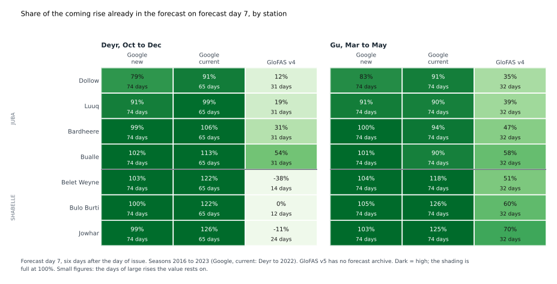
The forecast's highest value of the season divided by the reanalysis's highest value on the same days. At 1 the forecast carries the same peak as the reanalysis, so a level fitted on the reanalysis is reached as easily on the forecast; below 1, less easily; above 1, more easily.


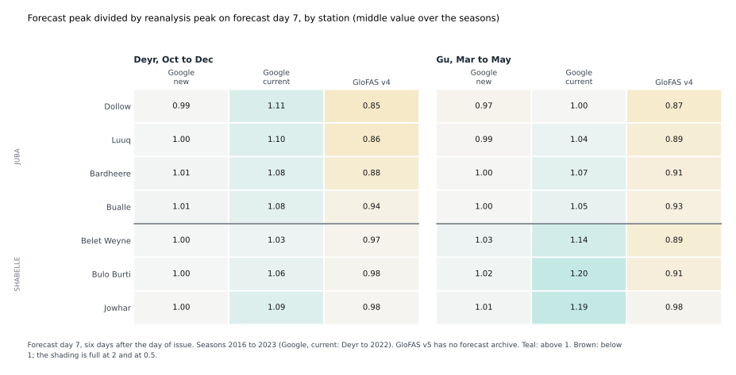
Rank correlation of the forecast with the gauge on the day the forecast is for, averaged over the stations of the river. 1 means the days fall in the same order by forecast flow and by gauge height; 0 means no relation (section 7).


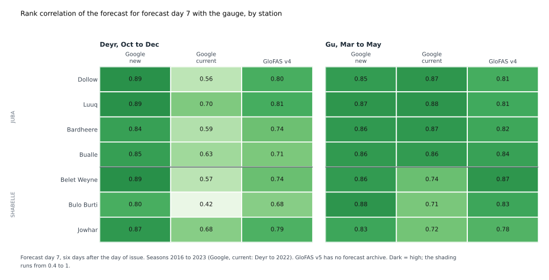
POD, the share of flood seasons with the threshold reached, at single stations at the 1-in-3 level, with the counts of the stations of a river added up.

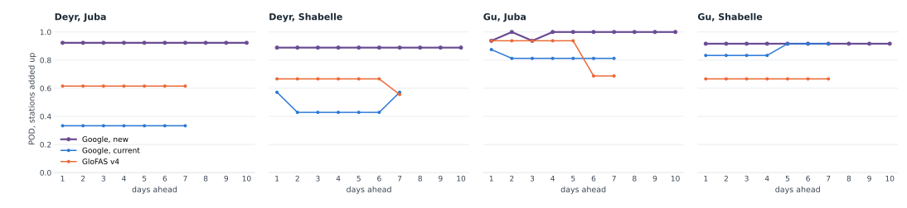

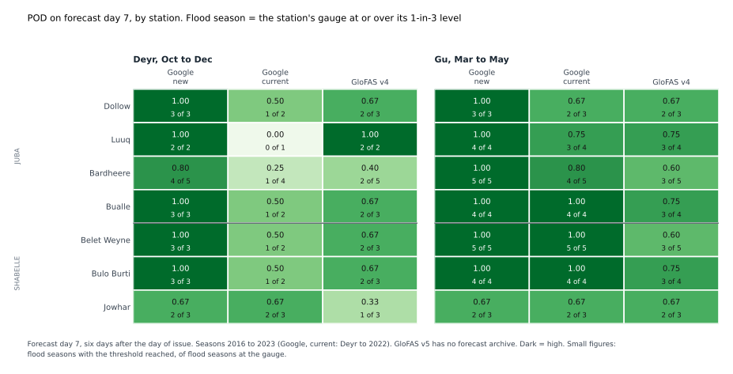
FAR, the share of seasons with the threshold reached that had no flood at the gauge, at single stations at the 1-in-3 level, with the counts of the stations of a river added up.

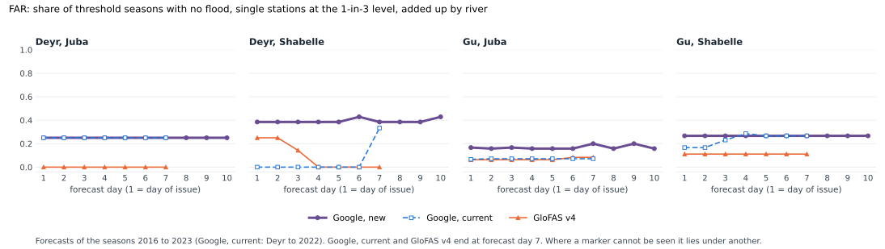

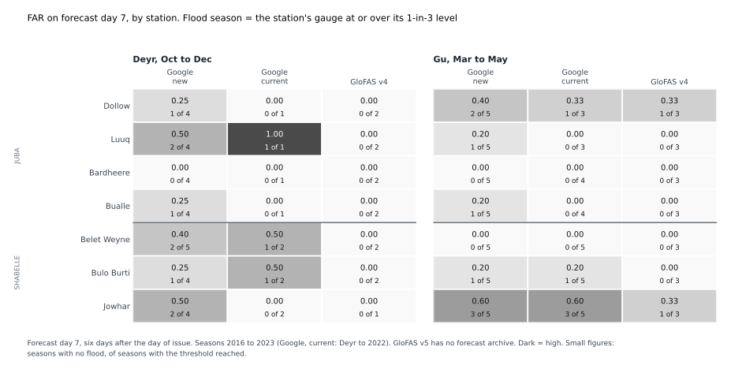
POFD, probability of false detection, at single stations at the 1-in-3 level, on the forecast for each forecast day, with the counts of the stations of a river added up. Section 6 explains the score.

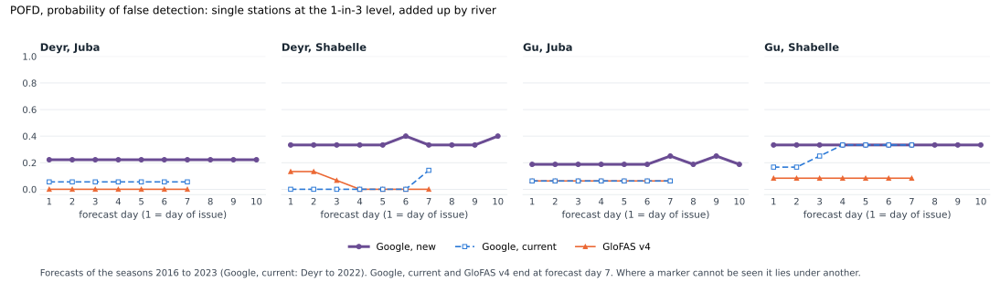

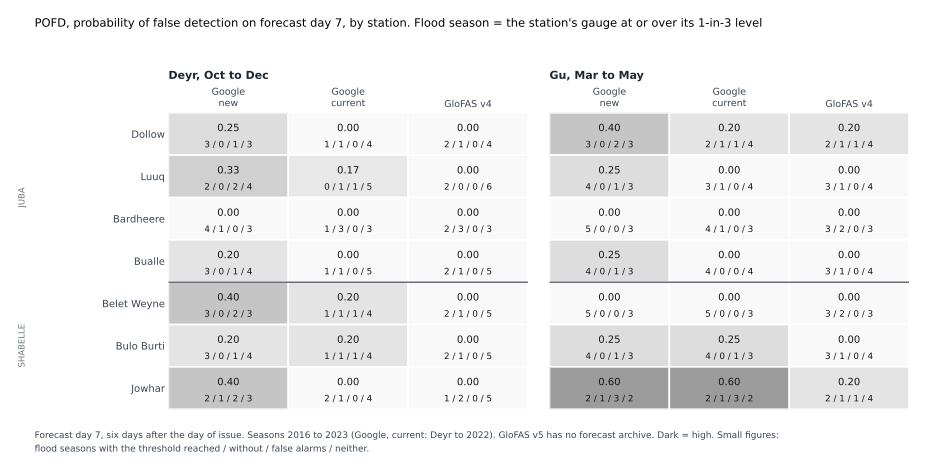
CSI, critical success index, at single stations at the 1-in-3 level, on the forecast for each forecast day, with the counts of the stations of a river added up. Section 6 explains the score.

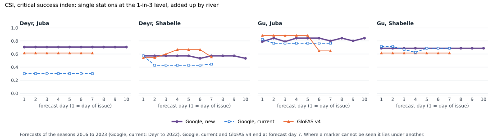

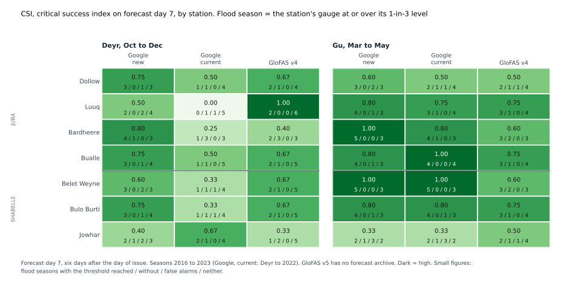
F1, at single stations at the 1-in-3 level, on the forecast for each forecast day, with the counts of the stations of a river added up. Section 6 explains the score.

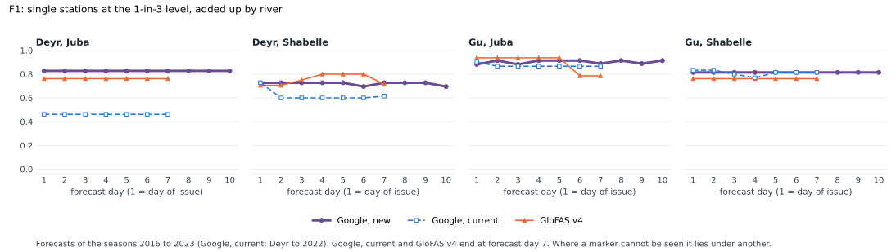

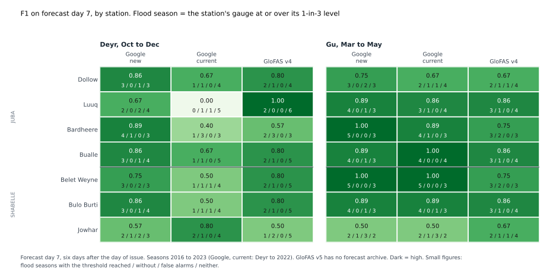
Frequency bias, at single stations at the 1-in-3 level, on the forecast for each forecast day, with the counts of the stations of a river added up. Section 6 explains the score.


Accuracy, at single stations at the 1-in-3 level, on the forecast for each forecast day, with the counts of the stations of a river added up. Section 6 explains the score.


HSS, Heidke skill score, at single stations at the 1-in-3 level, on the forecast for each forecast day, with the counts of the stations of a river added up. Section 6 explains the score.


PSS, Peirce skill score, at single stations at the 1-in-3 level, on the forecast for each forecast day, with the counts of the stations of a river added up. Section 6 explains the score.


On forecast day 7 the new model's daily forecast and its reanalysis have a rank correlation of 0.995 to 0.999 across the seven stations and two seasons. Google's description of its forecasting model (Cohen and others, 2026, a paper not yet peer reviewed) says the forecast days are computed from archived weather forecasts, from the European centre ECMWF and Google's GraphCast weather model. We have not confirmed that this holds for the November 2026 release.
5Timing at each station
Two measures in days, on the reanalysis, 1999 to 2023, over the flood seasons at each gauge: when the model peaks against when the gauge peaks, and when the model first reaches its 1-in-3 level against when the gauge first reaches its own. Plus means the model is earlier than the gauge. Where a gauge holds one value at its top for several days, its peak is dated to the first of those days; the true peak may fall on any of them. These two measures and the shift in section 7 use different seasons and different parts of the curve, and differ in sign at some stations.


6The threshold at each station against its gauge
Each season at a station falls into one of four boxes: a flood at the gauge with the model's threshold reached; a flood with the threshold not reached; the threshold reached with no flood, which is a false alarm; or neither. Every score below is a different way of reading those four counts. The counts are small: a station has 8 to 25 seasons with a gauge record, of which 3 to 11 are flood seasons at the 1-in-3 level, so a single season moves POD by 0.09 to 0.33.
Score
Level
POD, probability of detection: of the flood seasons at the gauge, the share in which the model reached its own threshold. 1 means the threshold was reached in every flood season; 0 means in none.
FAR, false alarm ratio: of the seasons in which the model reached its threshold, the share with no flood at the gauge. 0 means no false alarm.
POFD, probability of false detection: of the seasons with no flood at the gauge, the share in which the model still reached its threshold. 0 means the threshold was never reached without a flood.
CSI, critical success index: the flood seasons with the threshold reached, divided by all flood seasons plus the false alarms. It falls with either kind of error; 1 means neither occurred.
F1: twice the flood seasons with the threshold reached, divided by that number plus all flood seasons plus the false alarms. It is high only when POD is high and FAR is low; 1 means the threshold was reached in every flood season with no false alarm.
Frequency bias: seasons in which the model reached its threshold divided by flood seasons at the gauge. Above 1 the model reaches its threshold more often than the gauge floods; below 1, less often.
Accuracy: the share of all seasons in which model and gauge agree, flood or no flood. A model that never reached its threshold would score the share of seasons with no flood: 0.50 to 0.69 at the 1-in-3 level and 0.72 to 0.88 at the 1-in-5.
HSS, Heidke skill score: accuracy with the agreement that chance alone would give taken out. 1 means model and gauge agree in every season; 0 means no more agreement than chance; below 0, less than chance.
PSS, Peirce skill score: POD minus POFD, from -1 to 1. 1 means the model separates flood seasons from the rest fully; 0 means it does not separate them.


7Day-to-day agreement with the gauges
Rank correlation puts the days in order by model flow and, separately, by gauge height, and measures how far the two orders agree: 1 means the days fall in exactly the same order, 0 means no relation. It uses the order of the days, not their values, so the scale of a model does not matter.
View
Model and gauge compared on the same day. The small figures are the range the value takes when the seasons are redrawn at random, which shows how much it depends on which seasons happen to be on record.

The rivers rise and fall at about the same time each season, and that shared timing counts towards the same-day value. Here the usual value for each calendar day is taken out of both series first, so what is left is whether the model is higher than usual on the days when the gauge is higher than usual.

The model's curve is set against the gauge's curve of 10 days earlier up to 30 days later, and the highest value is kept. The small figure is that shift in days: plus means the model's curve runs earlier than the gauge's, minus later.

The same shifted comparison, using only seasons in which the gauge or the model was at or over its own 1-in-3 level. The small figure is the number of seasons used. The highest value sits at the end of the range tried for GloFAS v4 at Bulo Burti in Deyr (+30 days).

8How each model orders the seasons
Two measures of whether a model's large seasons are the gauge's large seasons. The rank correlation of season peaks compares the order of the seasons by their highest model flow with their order by highest gauge level. AUC is the chance that a flood season picked at random carries a higher model peak than a season without a flood picked at random: 0.5 is a coin toss, 1 means every flood season has a higher model peak than every season without a flood. Neither depends on where the model's threshold is set.

Level


9Size of the flows against SWALIM's discharge series
SWALIM publishes a discharge series, in cubic metres per second, at four of the seven stations. It is worked out from the gauge height: the two move in exactly the same order from day to day. The series repeats its highest value at Luuq on 25 days and at Bardheere on 15 days, so floods above that value are not told apart. At Bardheere, SWALIM's typical flow is 6.9 times its typical flow at Luuq, the next station upstream, while every model has about the same flow at the two (0.8 to 1.0 times). The Bardheere column is marked with an asterisk and is left out of the ranges quoted on this page.
Measure
Flow on a typical day (the middle day when all days are ranked by flow): the model's divided by SWALIM's. 1 means equal; 2 means the model runs at twice SWALIM's flow. Typical days are low-flow days; the next view compares the season peaks.
Ratio of season peaks: the model's highest flow of each season divided by SWALIM's, middle value over the seasons. Where SWALIM's series stops at a top value, its season peak is that value.
Correlation of daily values, from -1 to 1. 1 means the two rise and fall together in proportion; 0 means no straight-line relation.
Variability ratio: the size of the model's swings divided by the size of SWALIM's. 1 means the same spread.
KGE, Kling-Gupta efficiency: one score built from the correlation, the variability ratio and the ratio of averages. 1 means the model matches SWALIM's series in all three; the lower the score, the further the model is from it.
NSE, Nash-Sutcliffe efficiency: 1 means the model matches SWALIM's series; 0 means it is no closer to it than a flat line at SWALIM's average; below 0, further away than that line.


The trigger reads each model against the model's own levels, so multiplying a model's flow by a fixed factor does not change the scores in sections 3 to 8.
10The gauges used as the benchmark
A level meant to be reached in one season in three would be reached in about a third of the seasons on record. The chart shows how often each gauge reaches it, and how often a gauge sits at one reading for five days or more at the height of a season: Jowhar in Deyr (9 of 24 seasons); Belet Weyne in Gu (4 of 22 seasons); Bardheere in Deyr (3 of 23 seasons). In those seasons the record gives one reading for the peak days. The column at the right gives the season peak that occurs most often. At Dollow in Deyr (5.08 m in 2 seasons); Bardheere in Deyr (9.00 m in 4 seasons); Belet Weyne in Deyr (6.70 m in 2 seasons); Jowhar in Deyr (5.10 m in 3 seasons) the 1-in-3 level is that repeated peak, and a value equal to its level counts as reaching it.

11Limits of this review
- On 5 November 2026 Google's Flood Hub, its public forecast service, was not yet serving the new model. Everything here on the new model is from Google's published reanalysis and forecast archive.
- On forecast day 7 the new model's forecasts have a rank correlation of 0.995 to 0.999 with its own reanalysis and show 79 to 105% of the largest rises in that reanalysis, station by station (section 4). Whether a live forecast will do the same is not known from the archive.
- GloFAS v5 is scored on its reanalysis only: no archive of its past forecasts is published. On 17 November 2026 the Copernicus Early Warning Data Store listed such archives (reforecasts) for GloFAS versions 2.2, 3.1 and 4.0, and none for version 5. The Copernicus release page for GloFAS v5 gives 12 November 2026 for the pre-operational release, "Q4 2026 (TBD)" for the operational release and "tbc" for the reforecasts.
- The forecast comparison rests on eight years, 2016 to 2023 (7 in Deyr for Google, current), with 2 to 4 river floods at the 1-in-3 level on each river in each season.
- The river benchmark (two gauges, at any time in the season) and the trigger rule (three of four or two of three stations, on the same day) are not the same test, and the benchmark depends on which gauges were reporting.
- The Bardheere gauge has no readings after November 2023 and the Bualle gauge none after March 2024, so the lower Juba cannot be checked from then on.
- Each model's flow is read at one place on its river network per station: the grid cell or river segment on the main river nearest the station.
- Stations on one river rise together, so the seven stations are not seven separate tests, and totals added over stations count the same floods more than once.
12Method and files
Levels are read from each record's own season peaks: the peaks are ranked, and the 1-in-3 level is the value at the rank that one season in three reaches (Weibull plotting position). A value equal to its level counts as reaching it. A gauge season counts with at least 30 readings; a reading of zero is treated as a gap. Station floods compare the season's highest values; the river rule counts the stations over their level on the same day, in the season months only. Ranges: each score is recomputed 1,000 times (400 for correlations) on a random pick of the same number of seasons, in which a season can be picked more than once; the range holds the middle 90% of the results. Middle values of days that fall on a half are rounded away from zero. The archive of Google, current stamps its forecast days one day later than its reanalysis days. In section 4 it is lined up on its reanalysis. In the river rule its forecast days 1 to 7 are the seven days after the day of issue, as the live trigger reads them. The page Google's new river model shows the rank correlation on seasons at the 1-in-3 level with the gauge's season days only, so at long shifts the last days of the season drop out; here every season day of the model is used at every shift. The two agree within 0.05 at 53 of the 56 values. The others: GloFAS v4 at Bulo Burti in Deyr: 0.58 there, 0.75 here, at a shift of 30 days; GloFAS v4 at Belet Weyne in Deyr: 0.74 there, 0.82 here, at a shift of 18 days; GloFAS v4 at Jowhar in Deyr: 0.73 there, 0.82 here, at a shift of 23 days. Sources: Google Runoff Reanalysis and Reforecast, 2024 release and November 2026 release; SWALIM gauge levels and discharge series; GloFAS v4 and v5 from the Copernicus Emergency Management Service.
Every score, by season, river and station: river rulestation floods, 1-in-3station floods, 1-in-5 daily agreement and timingforecasts by forecast daydischarge gaugesall, as JSON